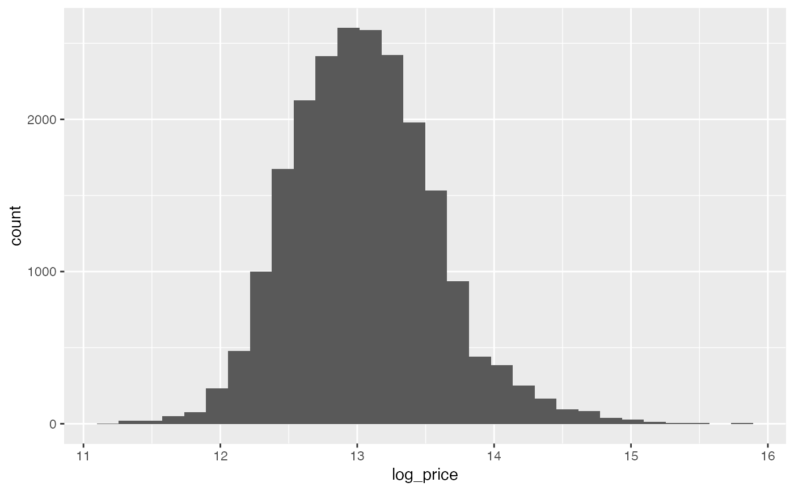

This dataset contains house sale prices for King County, which includes Seattle. It includes homes sold between May 2014 and May 2015. This dataset was obtained from Kaggle.com https://www.kaggle.com/harlfoxem/housesalesprediction/data
house_prices
A data frame with 21613 observations on the following 21 variables.
a notation for a house
Date house was sold
Price is prediction target
Number of Bedrooms/House
Number of bathrooms/bedrooms
square footage of the home
square footage of the lot
Total floors (levels) in house
House which has a view to a waterfront
Has been viewed
How good the condition is (Overall)
overall grade given to the housing unit, based on King County grading system
square footage of house apart from basement
square footage of the basement
Built Year
Year when house was renovated
zip code
Latitude coordinate
Longitude coordinate
Living room area in 2015 (implies-- some renovations) This might or might not have affected the lotsize area
lotSize area in 2015 (implies-- some renovations)
Kaggle https://www.kaggle.com/harlfoxem/housesalesprediction. Note data is released under a CC0: Public Domain license.
library(dplyr) library(ggplot2) # Create variable log of house price house_prices <- house_prices %>% mutate(log_price = log(price)) # Plot histogram of log of house price ggplot(house_prices, aes(x = log_price)) + geom_histogram()#>